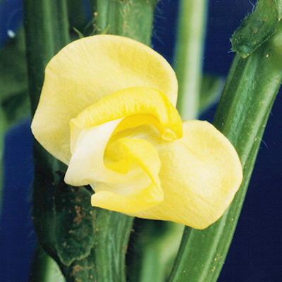

「あずき」または「しょうず」とも読みます。小豆は神話時代から親しまれてきた食材で、『古事記』や『日本書紀』にもその記述があり,古代から日本では赤い色には邪気を追い払う力があるとされ、 小豆は魔除けとして行事や儀式などに供されてきました。おもに餡の原料で和菓子や赤飯、汁粉などに使用されます。全国の約70％は北海道産で北海道産小豆の約半分が十勝で作られています。
小豆の栄養
小豆には顕著な利尿作用があることが、昔から知られています。これは、小豆の外皮に利尿や便通を促進するサポニンという成分が含まれているからです。サポニンは油脂を溶かす性質から脂肪やコレステロールを取り除く作用があり、抗酸化作用も認められています。ビタミンB1の豊富な小豆は、筋肉の中に疲労物質がたまることを防ぐ働きがあり、筋肉を使って疲れたとき、筋肉痛や肩こりのあるとき、小豆を食べれば症状が改善されると言われています。
北海道の小豆
流通している北海道産小豆は普通小豆、大納言、白小豆の3つの種類があり、品種ごとにどの種類に属するのか決まっています。普通小豆と大納言はいずれも赤い小豆ですが、大納言に分類されているのは普通小豆に比べて大粒の品種です。白小豆は粒の色が黄白色のもので、流通量はきわめて限られています。最近では沖縄地方でよく生産されている黒あずきも生産されるようになりました。